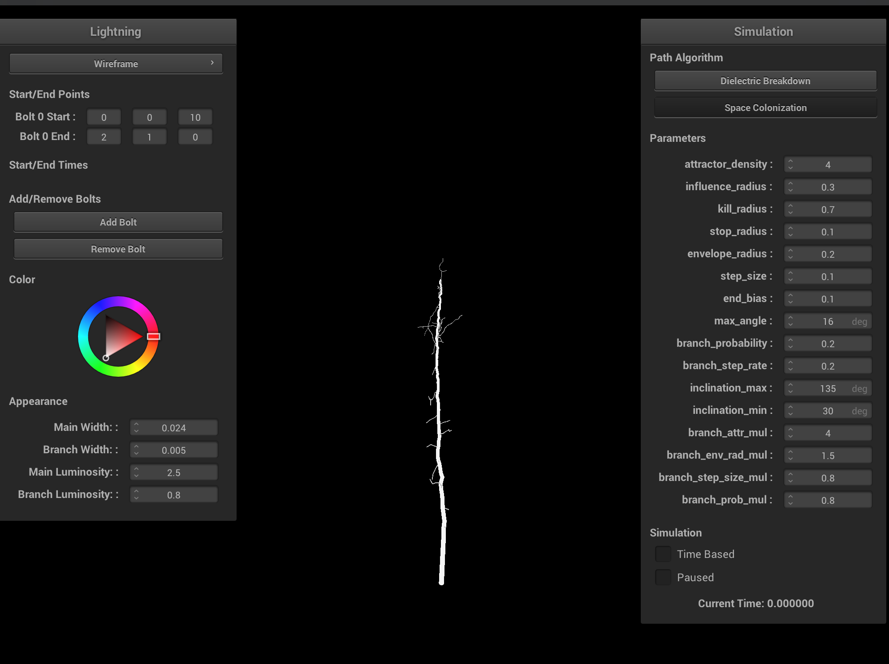

Lightning Simulation
Link to webpage: https://arumilla.github.io/finalprojectwebpage/final/index.html
Link to slides: https://docs.google.com/presentation/d/1gL_wzgH7XWUCPYR4sjSmSwFLCap9_iQ1t1BobJdenh8
Link to video: https://youtu.be/g6NiUkLZbIg
|
|

|
Abstract
This project focuses on simulating realistic atmospheric lightning in real-time. Our initial goal was to implement a highly realistic physical model using the latest research on lightning, such as the dielectric breakdown model (DBM).We diverged from our initial plans for two main reasons: (1) the DBM necessitates partial differential equation solvers, which are unable to run in real-time, and (2) the DBM is no longer the most up-to-date model for lightning formation. Thus, we changed our focus to come up with two fast approximations to existing physical models: (1) a fast DBM approximation, and (2) a space colonization model which mirrors a metastable oxygen model. Building off the framework in Homework 4, we added a fully-functional GUI for choosing the algorithm, visualizing the path, and changing the lightning parameters and appearance. Both algorithms can simulate and run in real time. As a proof of concept, we also implemented GPU acceleration for large batches of lightning bolts. In order to make the path realistic, we implemented a post-processing bloom shader to give the appearance of much stronger light.
Technical Approach
Fast DBM
The fast DBM approach builds off a 2017 paper [2]. We distinguish between three types of cells in a grid space: positive (representing the ground), negative (representing the lightning), and boundary (representing any neighboring cells). In each iteration of the algorithm, we look at the boundary cells as the candidate cells for the next cell in the lightning path. For each boundary cell we calculate and sum its potential in each of the three cell types and then find the potential and probability distribution with the following equations: \[ V_{approx, \{ P, N, B \}} = \sum_{i=1}^{n}(\frac{1}{r_{i}})^{\rho} \]This 2D graphic that shows the negative path (grey), positive ground (black), and boundary cells (blue) [2].
This approximates the potential calculation for a boundary cell as the sum of the inverse distance \(r_{i}\) to all cells. The tunable parameter \(\rho\) biases the potential towards nearby cells over distant cells. Observe that there are three different sums, one for the potential between a boundary point and each of the positive, negative, and other boundary cells. The net potential for a single cell is \[ \phi = \frac{P}{N*B} \] Using the potentials, we compute the probability of sampling that boundary cell as \[ P_{i} = \frac{(\phi_{i})^{\eta}}{\sum_{j=1}^{n}(\phi_{j})^{\eta}}, \] where \(\eta\) biases the probability to high-probability points. In general, a higher \(\rho\) or \(\eta\) decreases the degree of branching.
Variations on Depth

|
|
|
|
|
Increasing the depth increases the overall resolution, which allows for more complex branching structure.
Variations on \(\eta\) and \(\rho\)
|
|
|
|
|

|
Increasing \(\rho\) and \(\eta\) makes it less likely to take branches.
Once we calculate all the potentials for each boundary cell, these potentials become a probability distribution from which we will select the next candidate to join the lightning path. The idea behind the approximation of the potential is to incentivize the selection of cells that are close to ground, hence moving the lighting in a general downwards direction, while also penalizing cells that are close to the lightning path and other boundary cells, which encourages branching. Once the next candidate cell is one that reaches the ground of the grid, the algorithm stops and the path is complete. In the equations, there are two tunable parameters that can be used to affect the lightning path. Increasing \(\rho\) and \(\eta\) generally cause less branches to be taken.
In addition to implementing the fast DBM algorithm proposed by the previous paper, we also made some changes in order to speed up execution. One option that we explored was to prune boundary cells after some parameterized number of boundary cells in the list. This way we could omit potential calculations for boundary cells that are furthest from the current end of the path, which are not very likely to be selected anyway. This did provide some improvement, but this was mostly made irrelevant by the time we implemented our second optimization, being the vectorization of calculations. In the second iteration of this algorithm, we kept the calculations the same, but designed it such that it utilized vectorized functions, such as in NumPy. This provided a major improvement in calculation speed, allowing us to calculate the path quickly, and scale for higher resolutions.
Space Colonization
The DBM model makes for a compelling and intuitive explanation for the path of lightning. However, the potential difference between a charged region in a cloud and the ground, and the electric field it generates, is far too small to cause lightning formation. The most recent model of lightning formation proposes that the lightning leader travels through the atmosphere in a 3 step process [3]:- The ionization source causes coronal pulses and an accumulation of metastable oxygen molecules (an O2 molecule in an excited state).
- When metastables reach a critical density, a conducting column in the direction of metastable formation appears. At this critical density, metastables are able to conduct through an equilibrium effect between negatively charged electrons and positively charged ions.
- Electrons move along the column to produce a near-zero electric field, allowing charges to reach the stepped leader from the ionization source. The process then repeats.
The space colonization model is based on a 2022 paper on realistic lightning simulation [4], with several modifications and improvements to ground the algorithm based on the metastable model. Given start and end points, we randomly fill a cylindrical volume between the two points with attractors. The stepped leader of the lightning travels in a direction based on a weighted sum of nearby attractors, which models the distribution of metastable accumulation. In order to maintain the principle of minimum energy, attractors that are too close to the lightning leader are removed.
|
|
|
This is a visualization of the full volume of attractor points, branches, and resulting lightning path generation. Once the initial cylinder of attractors is generated, the algorithm deterministcally finds the main path.
The original paper has poor and non-physically accurate branching, so we modify branching to be recursive in nature. Because the end point of the stepped leader, and more fundamentally the algorithm, is deterministically set, we approximate the lower ionization potential and metastable accumulation rate of the branches by recursively updating a probability that a branch's leader steps. We add additional nondeterminism by randomly sampling endpoints of the branches in a 15 to 115 degree range based on the end point and the current distance to the end point.
|
|
|
|
|
|
|
|
|
|

|
|
|
|
|
|
Ablation study on various space colonization parameters. Increasing the branch probability and step size creates more branching, but more unrealistic lightning. Increasing the step size results in shorter lightning bolts and less branchiness. Ideally, both the step size and influence/kill radii should be very small, and the attractor density should be very large. Having a larger kill radius compared to influence radius results in very straight lightning bolts and is physically inaccurate. Having a smaller kill radius compared to influence radius results in degenerate cases, which can be interpreted as cloud-to-cloud lightning.
Hardware Acceleration
We implemented brief sketches of our algorithms in Python for fast development. We then considered three main approaches to accelerate our path calculations:- Translate the unoptimized Python code into C++. Then optimize later. This is the worst but most straightforward option.
- Rewrite the Python code using CUDA or Eigen with BLAS and ATen. This is the most principled but most time consuming approach, and requires complex handling between CPU and GPU calculation.
- Vectorize the operations in Python using NumPy and PyTorch, and then use the Python C API to call the path algorithms. NumPy uses BLAS and PyTorch uses ATen for their underlying implementations.
For methods (1) and (2), this would have involved very time-consuming rewrites, debugging, and learning foreign C/C++ libraries. Although method (3) has overhead passing data and structures between C++ and Python, on top of Python specific overhead (global interpreter lock, lack of multithreading, etc.), we wanted to leverage the already existing SIMD and vectorized speedups that both NumPy and PyTorch offer without adding too much complexity. We wrote a general framework, ComputeBackend, which abstracts away switching between NumPy arrays and PyTorch tensors, and can automatically select the best device. According to the timing analysis below, NumPy using CPU is almost always preferred for the space colonization algorithm, and is always preferred for the fast DBM algorithm due to its highly sequential nature.
We vectorized each of our path algorithms by replacing lists with ComputeBackend arrays, for loops with batch operations, and if statements with masks. This was much easier said than done, and we encountered numerous problems (such as translation error) during the vectorization stage. Additionally, integrating Python and C++ was certainly easier than rewriting vectorized algorithms in C++, but also added complexity when trying to build the project cross-platform, due to additional Python and Cython dependencies. We came up with a solution using Conda as our cross-platform package manager for Python, which we will include with our public release.
|
|
|
|
|
|
PyLightning
We created a PyLightning class as the primary communication interface between C++ and Python. PyLightning abstracts away the complex package management of the Python C API, the instantiation of the ComputeBackend, the passing of parameters from the GUI to a LightningParam data class, and the creation of the Lightning classes themselves. Both our methods implement an abstract class, which include methods to return the minimum necessary data to reconstruct the time, order, and structure of the lightning bolt in 3D space. The data returned consist of 3D points, pointers to parents, and the timestep of creation. PyLightning then processes the results immediately into a more digestible form for the GUI and shader pipeline, to maximize real-time output. Because our vectorized implementations are incredibly fast, we opt to simulate the entire path of the lightning before it reaches our C++ code.Time-based Simulation
Both of our path algorithms are time-based, which lends some credence to a time-based simulation. Atmospheric lightning is characterized by 3 stages:- (Stepped Leader) Lightning leaders, with possible branching, travel through the atmosphere in search for a path to ground.
- (Return Stroke) A conductive path from the ionization source to ground forms, causing a massive discharge in potential. This is the most luminous part of lightning.
- (Afterimage) After all the electric potential is exhausted, the light as a result of the discharge and the ionization of the air surrounding the return stroke gradually fades.
We replicate this 3-stage effect using 5 user-specified time periods (start, return, discharge, fade out, end). PyLightning computes a backtrace to identify the points along the main path and their return stroke order, as well as the parent-child point pairs for rendering each segment of lightning. The lightning is structured as a connected sequence of points and cylinders according to the parent-child point pairs. During the return stroke, segments along the main path are rendered with brighter luminosity and greater width. During the afterimage phase, we gradually anneal the luminosity and width of both the return stroke and branches to 0.
Shaders
To create the illusion that the lightning is brighter, we implemented a post-processing bloom shader. This consists of a high pass filter, multi-stage Gaussian blur, and final composite shader which combines the rendered and processed scene, and tonemaps the result. In order to save one post-processing step, we integrate the high-pass filter in parallel with the initial render. We use a ping-pong buffer to split and implement the multi-stage Gaussian blur.|
|
|

|
|
|
|
We encountered significant difficulty using GLSL to switch between the different framebuffers, and connect the output of one shader to the input of another. The main difficulty in adding the post processing step was switching between different framebuffers to render to in order to use as a texture to run gaussian blur over. The scene kept on getting cut off due to a bug with hardcoding the sizing of the framebuffers but we were able to resolve it by adding resizing to the callback function as well as pulling the screen size before initializing the postprocessing framebuffer.
GUI Magic
Our GUI supports changing the algorithm type, modifying all their parameters, adding multiple lightning bolts, changing their start and end points, time-based simulation events, luminosity, width, and even color.
Results
Varying Colors
Varying Parameters and Algorithms
References
[1] Kim T, Lin M.C. (2004). Physically based animation and rendering of lightning. 12th Pacific Conference on Computer Graphics and Applications, Seoul, Korea (South), 2004. 10.1109/PCCGA.2004.1348357
[2] Yun J, Son M, Choi B, Kim T, Yoon S.E. (2017). Physically inspired, interactive lightning generation. Computer Animation and Virtual Worlds. 28:e1760. 10.1002/cav.1760
[3] Lowke, J & Szili, E. (2022). Toward a theory of "stepped-leaders" of lightning. Journal of Physics D: Applied Physics. 56. 10.1088/1361-6463/aca103
[4] Reis N & Fernandes A.R. (2022). Using a Space Colonization Algorithm for Lightning Simulation. 2022 International Conference on Graphics and Interaction (ICGI), Aveiro, Portugal, 2022. 10.1109/ICGI57174.2022.9990427
Contributions
- Jennifer: Shaders, post-processing, GUI updates for algorithm parameters and color
- Sonia: Fast DBM with vectorization, integration with PyLightning.
- Claire: Output to lightning structure pipeline, backtrace, and GUI updates for customizing the start and end points of a lightning.
- James: Space colonization, hardware acceleration, ComputeBackend, PyLightning, GUI updates for and implementation of time-based simulation and multi-bolt rendering.